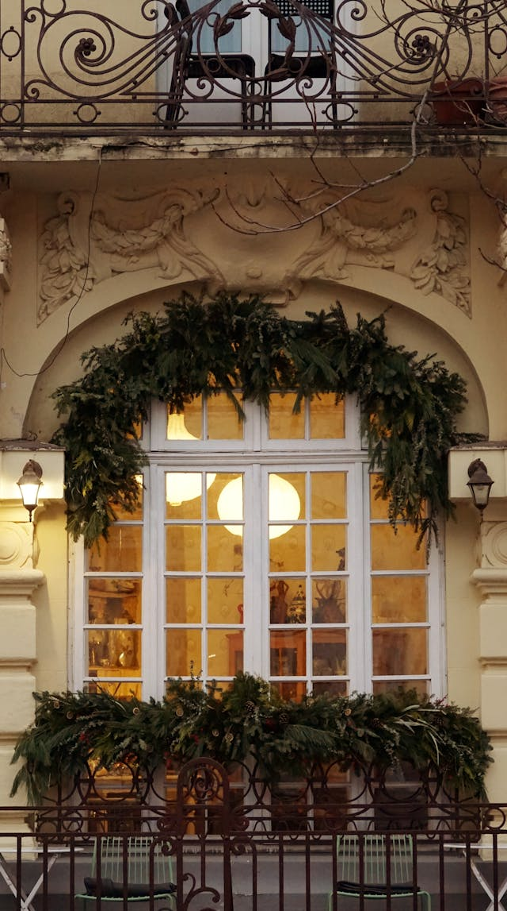

Become a Member

Membership in the Blue Springs Historical Society is one of the most meaningful ways to support our mission. Your membership helps preserve local history, maintain the museum, and fund educational programs that benefit the entire community.
Membership Form
Click Here for Membership Form
How to Pay
You may pay your membership dues using PayPal or by mailing a check or money order.
- PayPal: Use the PayPal button to pay with a credit card.
- Mail: Send your membership form and payment to:
Blue Springs Historical Society
PO Box 762
Blue Springs, MO 64013
Why Membership Matters
As a nonprofit organization, we rely on the support of our members to continue our work. Membership contributions help us maintain the Dillingham‑Lewis House Museum, preserve artifacts, and expand our programs. Your support ensures that future generations will have access to the history that shaped Blue Springs.
Membership Benefits
- Free or discounted admission to events
- Early access to special programs
- Quarterly newsletters
- Invitations to member only gatherings
- Recognition in our annual report
- The satisfaction of supporting local history
Membership Levels
- Individual
- Family
- Senior
- Student
- Supporting Member
- Lifetime Member
Business Membership Levels
- $100 Bronze Business Membership
- $250 Silver Business Membership
- $500 Gold Business Membership
How Your Support Helps
Membership funds directly support:
- Museum maintenance
- Exhibit development
- Archival preservation
- Educational programming
- Community outreach
- Volunteer training
Join or Renew
Your membership makes a lasting impact. Whether you are renewing or joining for the first time, we appreciate your commitment to preserving the history of Blue Springs.
How to Join the Society
The Blue Springs Historical Society invites anyone interested in the preservation of history in Blue Springs and Jackson County to purchase an annual membership. Your support helps us protect local heritage and maintain our historic sites.